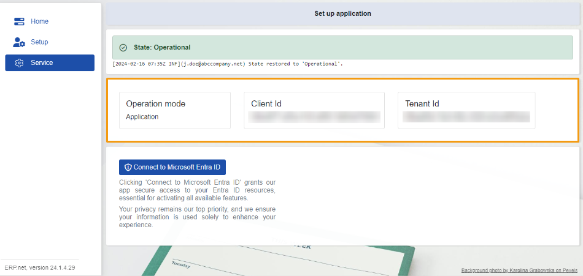
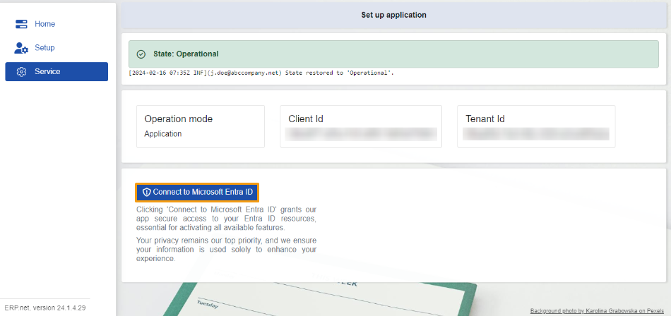
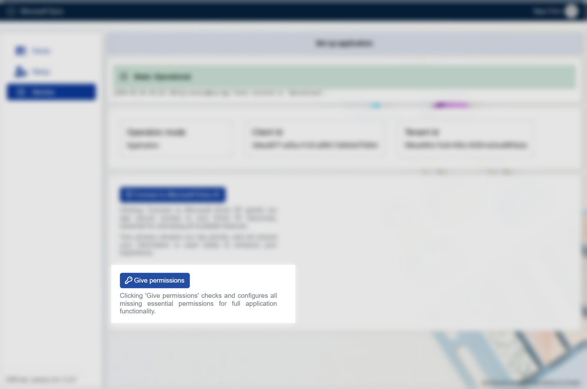

Service
The Service section is exclusively for ERP.net admins.
Here, they can request permissions for accessing Microsoft 365 resources from an admin within their enterprise company.
These permissions are essential for enabling synchronization between the company's Microsoft 365 account and the ERP.net Web Client.

State
In the Service section, you'll find the current state of the MsSync app.
There are also logs detailing all state changes, similar to those found in the Setup section.
Information panel
This panel stores details about the Operation mode of the app, and reveals the Client Id, and Tenant Id, which play a role in establishing the two-way synchronization process.

Connect to Microsoft Entra ID
This button sends a request on behalf of ERP.net to access resources already available in your Microsoft 365 account.

This permission not only enables modifications to existing resources but also allows the inclusion of new ones.
Any changes made to resources in ERP.net are mirrored in Microsoft 365, and vice versa.

Give permissions
The "Give Permissions" ensures that the MsSync app has all the necessary permissions to function optimally. It's recommended that an admin user click the "Give Permissions" button after the very first start of the app. This action will automatically check and configure all required permissions specific to the various job types.
This process is essential for activating all available features and ensuring a seamless user experience.

--
Note
The screenshots taken for this article are from v24 of the platform.